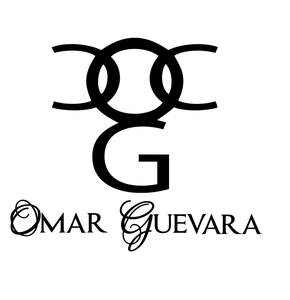

Trade Mark Journal No.2025/016 18 April 2025
UK00004155424 3 February 2025 (3,25)

- Class 3
- Hair oil; Hair oils; Hair fixing oil; Beard oil; Oil baths for hair care; Facial oil; Shaving oil; Cuticle oil; Oils for hair conditioning; Hair shampoo; Hair lotion; Combing oil; Hair wax; Hair liquids; Hair lotions; Hair spray; Hair moisturizers; Japanese hair fixing oil (bintsuke-abura); Hair liquid; Hair dye; Body oil; Hair shampoos; Body oil spray; Hair conditioner; Hair pomades; Hair gel; Hair emollients; Hair cosmetics; Massage oil; Hair styling lotions; Dyes for the hair; Hair dyes; Hair balm; Hair moisturisers; Hair serums; Hair sprays; Baby hair conditioner; Hair lacquer; Hair cream; Cosmetic preparations for the hair and scalp; Bath oil; Hair balsam; Shampoos for human hair; Baby oil; Suntanning oil [cosmetics]; Wax treatments for the hair; Hair lighteners; Body oil [for cosmetic use]; Hair styling spray; Colouring lotions for the hair; Hair nourishers; Hair powder; Hair balms; Hair styling waxes; Hair styling gel; Hair creams; Hair mousse; Hair conditioners; Hair colorants; Hair masks; Horse oil cream for skin care; Hair texturizers; Cleansing oil; Hair relaxers; Hair rinses; Hair mascara; Oils for the skin; Hair gels; Lavender oil for cosmetic use; Hair and body wash; Hair colourants; Styling sprays for the hair; Hair bleach; Shaving oils; Jasmine oil; Hair lacquers; Rosemary oil for cosmetic use; Hair glazes; Hair bleaches; Hair color; Tints for the hair; Skin lotion; Shaving lotion; Suntan lotion [cosmetics]; Bath lotion; Facial lotion; Body lotion; Sunscreen lotions; Moisturising body lotion [cosmetic]; Moisturizing body lotions; After-sun lotions; Suntan lotions; Skin cleansing lotion; Baby lotion; After-shave lotions; Aftershave lotions; Scented body lotions and creams; Moisturising creams, lotions and gels; Shaving lotions; Suncare lotions; Hand lotion (Non-medicated -); Sun-block lotions; Skin lotions; Lotions for the skin; Sun tan lotion; Body mask lotion; Moisturising skin lotions [cosmetic]; Moisture body lotion; Scented body lotions; Aftershave moisturising cream; Cosmetic suntan lotions; Depilatory lotions; After-sun lotions [for cosmetic use]; Day lotion; Moisturizing creams; Sun-tanning creams and lotions; Sunscreen creams; Bathing lotions; Non-medicated skin lotions; Cleansing lotions; Skin moisturizer; Massage oils and lotions; Facial lotions; Suncare lotions [for cosmetic use]; Suntan creams [self-tanning creams]; Moist wipes impregnated with a cosmetic lotion; Aromatherapy lotions; Cosmetic sun milk lotions; Body lotions; Sunscreen cream; Suntan creams; Cosmetic creams and lotions; Bath lotions (Non-medicated -); Sun-tanning lotions; After-shave creams; Scented body creams; Moisturiser; After-sun creams; Moisturizers; Moisturising creams; Body cream soap; Non-medicated skin clarifying lotions; Aftershave creams; Aftershave balm; Mattifying gel cream; Baby lotions; Sunscreen creams [for cosmetic use]; Hand lotions; Skin moisturizers; Non-medicated hair lotions; Skin moisturiser; Moisturising skin creams [cosmetic]; Non-medicated lotions; Skin moisturizers used as cosmetics; Exfoliant creams; Skin moisturizer masks; Pre-shave creams; Aloe soap; Milky lotions for skin care; After-shave balms; Deodorant soap; Soap (Deodorant -); After-sun oils [cosmetics]; Aftershave balms; Non-medicated stimulating lotions for the skin; Shaving balm; After-sun milk [cosmetics]; Cream soaps; Creams for tanning the skin; Moist paper hand towels impregnated with a cosmetic lotion; After-shave gel; Shower creams; Aloe soaps; Skin moisturisers; Cosmetic hair lotions; Toning lotion, for the face, body and hands; Exfoliating creams; Suntan oils [cosmetics]; Moisturisers; Blemish balm creams; Skin cleansing cream [non-medicated]; Beauty lotions; Antiperspirant soap; Soap (Antiperspirant -); Styling lotions; Cosmetic facial lotions; Facial lotions [cosmetic]; Creams (Soap -) for use in washing; Hair protection lotions; Body creams [cosmetics]; Skin soap; Cosmetics in the form of lotions; Moisturisers [cosmetics]; After-sun milks [cosmetics]; Emollient shampoos; Shaving creams; Moisturising gels [cosmetic]; Anti-aging moisturizers used as cosmetics; Face and body lotions; Shaving balms; Body and facial creams [cosmetics]; Facial moisturizers; Moisturizing milk; Skin care lotions [cosmetic]; Beauty balm creams; Non-medicated skin creams; Skin creams [non-medicated]; Anti-wrinkle cream; Shaving cream; Anti-aging cream; Skin cream; Facial cream; Lip cream; Bath cream; Cuticle cream; Cold cream; Shower cream; Eye cream; Cleansing cream; Shoe cream; Hand cream; Base cream; Anti-wrinkle cream [for cosmetic use]; Camouflage cream; Nail cream; Body cream; Cream foundation; Cream for whitening the skin; Whitening the skin (Cream for -); Day cream; Boot cream; Night cream; Skin cream [for cosmetic use]; Face cream (Non-medicated -); Facial cream [for cosmetic use]; Nappy cream [non-medicated]; Skin cleansing cream; Anti-wrinkle creams; Wrinkle resistant cream; Cream cleaners (Non-medicated -); Hair removing cream; Body mask cream; Facial oils; Bath oils; Baby oils; Oils for cleaning purposes; Natural oils for cosmetic purposes.
- Class 25
- Heelpieces for footwear; Children's footwear; Footwear; Ladies' footwear; Sneakers [footwear]; Infants' footwear; Footwear [excluding orthopedic footwear]; Trainers [footwear]; Footwear soles; Soles for footwear; Insoles for footwear; Wooden shoes [footwear]; Casual footwear; Footwear for sport; Footwear for use in sport; Over-trousers; Pullstraps for shoes and boots; Babies' clothing; Footwear for men; Footwear for sports; Sports footwear; Parts of clothing, footwear and headgear; Flip-flops for use as footwear; Leisure footwear; Babies' pants [clothing]; Women's shoes; Pumps [footwear]; Children's clothing; Children's headwear; Footwear for women; Footwear not for sports; Fishing footwear; Half-boots; Shoes; Tips for footwear; Footwear (Tips for -); Girls' clothing; Insoles for shoes and boots; Insoles [for shoes and boots]; Footwear uppers; Uppers (Footwear -); Lumberjackets; Rubbers [footwear]; Non-slipping devices for footwear; Footwear (Non-slipping devices for -); Climbing footwear; Slipovers [clothing]; Women's clothing; Sport shoes; Motorcyclists' clothing of leather; Golf footwear; Cyclists' clothing; Footwear for snowboarding; Beach footwear; Headshawls; Ladies' clothing; Inner socks for footwear; Infants' shoes; Sports shoes; Japanese split-toed work footwear (jikatabi); Traction attachments for footwear; Shoes for leisurewear; Training shoes; Ladies' boots; Leisure shoes; Footwear made of vinyl; Sneakers; High-heeled shoes; Boys' clothing; Babies' undergarments; Shoes soles for repair; Chemisettes; Motorcyclists' clothing; Leather shoes; Welts for footwear; Footwear (Welts for -); Sports overuniforms; Shoe soles; Motorists' clothing; Protective metal members for shoes and boots; Ladies' sandals; Cleats for attachment to sports shoes; Jogging bottoms [clothing]; Fittings of metal for boots and shoes; Jogging shoes; Fittings of metal for footwear; Clothing; Knitwear [clothing]; Jackets [clothing]; Ready-to-wear clothing; Woolen clothing; Furs [clothing]; Garments for protecting clothing; Layettes [clothing]; Clothing layettes; Linen clothing; Headbands [clothing]; Headbands for clothing; Gloves [clothing]; Gloves as clothing; Clothes; Maternity clothing; Kerchiefs [clothing]; Jerseys [clothing]; Denims [clothing]; Shorts [clothing]; Cashmere clothing; Capes (clothing); Oilskins [clothing]; Gabardines [clothing]; Silk clothing; Leather (Clothing of -); Leather clothing; Clothing of leather; Collars [clothing]; Knitted clothing; Veils [clothing]; Hoods [clothing]; Windproof clothing; Corsets [clothing, foundation garments]; Embroidered clothing; Wristbands [clothing]; Belts [clothing]; Belts for clothing; Bandeaux [clothing]; Rainproof clothing; Waterproof clothing; Casual clothing; Visors [clothing]; Jackets being sports clothing; Jackets (Stuff -) [clothing]; Stuff jackets [clothing]; Bottoms [clothing]; Playsuits [clothing]; Clothing for leisure wear; Ready-made clothing; Latex clothing; Trunks being clothing; Woven clothing; Infant clothing; Drawers [clothing]; Drawers as clothing; Leisure clothing; Ties [clothing]; Clothing for children; Clothing for sports; Sports clothing; Muffs [clothing]; Bodies [clothing]; Clothing for babies; Tops [clothing]; Clothing for infants; Clothing for cycling; Weatherproof clothing; Pockets for clothing; Fabric belts [clothing]; Water-resistant clothing; Triathlon clothing; Handwarmers [clothing]; Clothing for skiing; Beach clothing; Thermal clothing; Chaps (clothing); Cowls [clothing]; Men's clothing; Fishing clothing; Mitts [clothing]; Braces for clothing; Dance clothing; Babies' outerclothing; Mankinis; Bushjackets; Sweatjackets; Tailleurs; Sunsuits; Neckerchieves; Earbands; Wind-jackets; Children's outerclothing; Sandal-clogs; Ladies' outerclothing; Womens' outerclothing.
Mohammad Abid Aslam